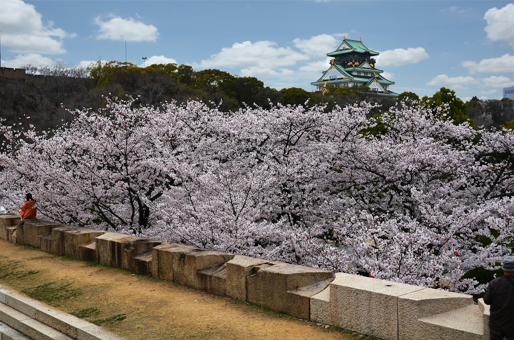

検索
おすすめタグ
エリアで絞り込む
天王寺・阿倍野・新世界エリア
中之島・淀屋橋・本町エリア
上本町・鶴橋エリア
大阪城・鶴見緑地エリア
堺・泉北エリア
大阪南東部エリア（南河内）
並び替え
Relevance
人気順 (昇順)
人気順 (降順)
Date (ASC)
イリュージョン...
視て、体感せよ!! 至近距離で見る”進化型イリュージョンショー"
大阪城公園
大阪城天守閣をはじめ、西の丸庭園、梅林、大阪城ホール、弓道場などの施設がある(...)

大阪城西の丸庭園
堀の向こうに天守閣を仰ぐ緑豊かな庭園。春には300本の桜が咲き競い、花見客で(...)
天下一の黄金の...
大阪城のお濠めぐりができる黄金色の御座船が登場！季節ごとに移りゆく景色の中、(...)
帝国ホテル 大阪
大川べりの桜並木が都心のリゾートを思わせる。上質のホテルの珠玉のひととき
ピースおおさか...
大阪空襲を語り継ぐ平和ミュージアム。2015(平成27)年4月30日リニュー(...)
大阪城ホール
大阪城築城400年を記念してつくられた、最大16,000人収容の多目的アリー(...)
大阪城公園
日本の美、日本の四季を実感!
大阪周遊パス...
難波宮跡公園 ...
飛鳥～奈良時代にかけて、大阪が日本の都であったことを示す前後期の宮殿の跡。
楽しい思い出を...
ボランティアガイドが、大阪の魅力を紹介してくれます。
大阪城音楽堂
緑豊かな大阪城公園内にある、約3,000人の収容可能な野外音楽堂。